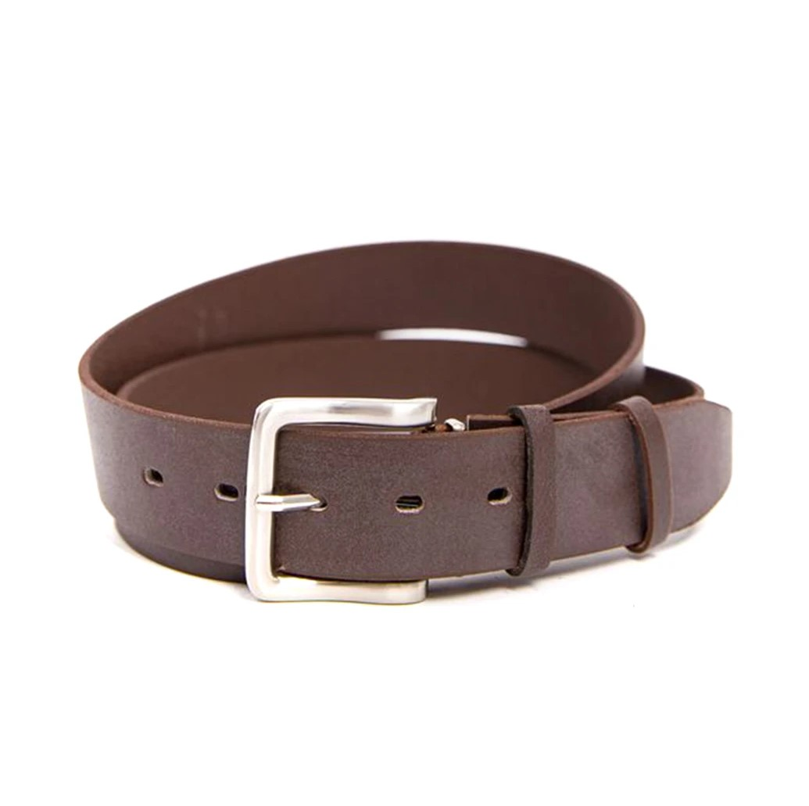
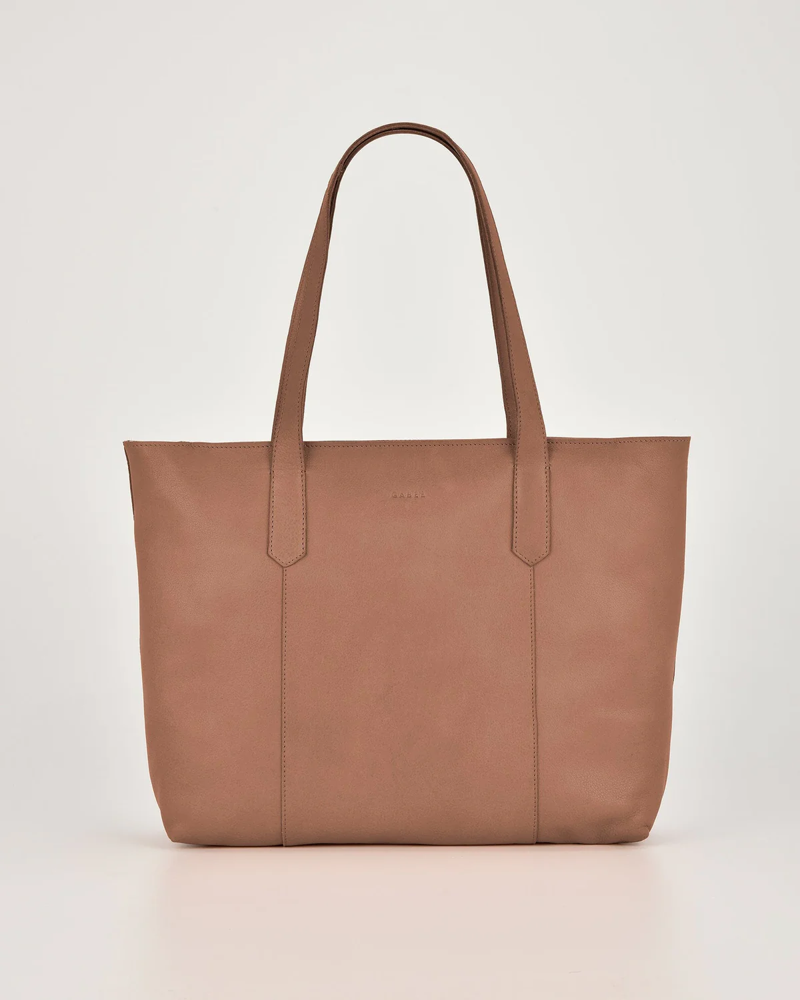

-

Шкіряний рюкзак ручної роботи
Рюкзак ручної роботи зі шкіри — це унікальний аксесуар, який поєднує в собі стиль, практичність та справжню майстерність. Він виготовлений із використанням натуральних матеріалів і висококласної техніки, що робить кожен рюкзак неповторним і довговічним. Кожна деталь рюкзака створюється вручну з великою увагою до дрібниць. Це дозволяє забезпечити максимальну функціональність і продуманий дизайн. Шви, застібки та інші елементи виготовлені так, щоб відповідати найвищим стандартам якості. Цей виріб є ідеальним вибором для тих, хто цінує якість, функціональність і неповторний дизайн.
-


Шкіряні ремені
Класичні ремені — це не просто функціональний аксесуар, а важлива складова стильного гардеробу, яка надає будь-якому образу завершеності. Виготовлений із натуральної шкіри найвищої якості, такий ремінь поєднує стриману елегантність і універсальність, що робить його ідеальним для різних стилів — від ділового до повсякденного.
-

Жіноча шкіряна сумка
Шкіряна жіноча сумка ручної роботи — це не просто аксесуар, а справжній витвір мистецтва, який поєднує в собі елегантність, практичність і унікальний стиль. Створена з натуральної шкіри преміум-класу, вона стане не лише зручним, але й статусним елементом вашого гардеробу. Головною перевагою цієї сумки є її ручне виготовлення. Кожен етап створення, від вибору матеріалів до фінального збирання, виконується з максимальною увагою до деталей. Традиційні техніки обробки шкіри та точне ручне прошивання гарантують довговічність і надійність виробу.